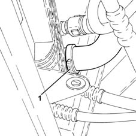
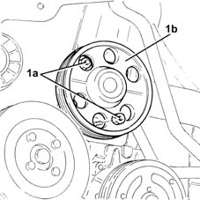
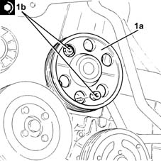

1088C10 water pump - r + r
- Path
- Procedures > 10 ENGINE > 1088 ENGINE COOLING > 1088C water pump and thermostat > 1088C10 water pump - r + r
- Kind
- repair procedure (removal / refitting; the operation number is the code)
- Applies to
- all engines; all production periods
- Interactive page
- https://sloeber94.github.io/elrnDB-lYpsln/en/#/2428971
Applies to: engines: 1.2 8v; all production periods
 Removing
Removing
 Refitting
RefittingProceed with removal 1048A10 air cleaner filtering element - replace .
Proceed with removal 1008B10 power unit front mount (timing side) flexible block - replace .
Proceed with removal 1008A46 cam shaft left rigid mount - r r .
Proceed with removal 1032D12 timing system protective cover(s) - r + r .
Proceed with removal 4450B04 right front wheel r r .
Proceed with removal 7055B66 Engine compartment DUST SHIELD protection in right front wheel arch - R.R. .
Proceed with removal 7055B91 Right front WHEEL ARCH LINER - R.R. .
Proceed with removal 1092B40 air conditioner compressor/alternator drive belt - r + r .
Proceed with removal 1092A10 Crankshaft services PULLEY - R.R. .
Proceed with removal 1032B10 toothed timing belt - r + r for timing adjustment or replacement .
Proceed with removal 1088C14 water pump - r + r with drive belt removed .
Applies to: engines: 1.2 16v; all production periods
Removing
RefittingProceed with removal 4450B04 right front wheel r r .
Proceed with removal 7055B66 Engine compartment DUST SHIELD protection in right front wheel arch - R.R. .
Proceed with removal 7055B91 Right front WHEEL ARCH LINER - R.R. .
Proceed with removal 1092B40 air conditioner compressor/alternator drive belt - r + r .
Proceed with removal 1092A10 Crankshaft services PULLEY - R.R. .
Proceed with removal 1048A10 air cleaner filtering element - replace .
Proceed with removal 1056B60 single fuel manifold pipe, with injectors - r + r .
Proceed with removal 1032B10 toothed timing belt - r + r for timing adjustment or replacement .
Proceed with removal 1088C14 water pump - r + r with drive belt removed .
Applies to: engines: 1.4 16v; all production periods
Removing
RefittingProceed with removal 4450B04 right front wheel r r .
Proceed with removal 7055B66 Engine compartment DUST SHIELD protection in right front wheel arch - R.R. .
Proceed with removal 7055B91 Right front WHEEL ARCH LINER - R.R. .
Proceed with removal 1092B40 air conditioner compressor/alternator drive belt - r + r .
Proceed with removal 1092A10 Crankshaft services PULLEY - R.R. .
Proceed with removal 1048A10 air cleaner filtering element - replace .
Proceed with removal 1056B60 single fuel manifold pipe, with injectors - r + r .
Proceed with removal 1032B10 toothed timing belt - r + r for timing adjustment or replacement .
Proceed with removal 1088C14 water pump - r + r with drive belt removed .
Applies to: engines: 1.3 JTD; all production periods
Removing
RefittingPosition the vehicle on the ramp.
1. Loosen the band and disconnect the lower radiator coolant outlet hose from the radiator, radiator side.

Applies to: engines: 1.2 8v; all production periods
Refitting
RemovingProceed with refitting 1088C14 water pump - r + r with drive belt removed .
Proceed with refitting 1032B10 toothed timing belt - r + r for timing adjustment or replacement .
Proceed with refitting 1092A10 Crankshaft services PULLEY - R.R. .
Proceed with refitting 1092B40 air conditioner compressor/alternator drive belt - r + r .
Proceed with refitting 7055B91 Right front WHEEL ARCH LINER - R.R. .
Proceed with refitting 7055B66 Engine compartment DUST SHIELD protection in right front wheel arch - R.R. .
Proceed with refitting 4450B04 right front wheel r r .
Proceed with refitting 1032D12 timing system protective cover(s) - r + r .
Proceed with refitting 1008A46 cam shaft left rigid mount - r r .
Proceed with refitting 1008B10 power unit front mount (timing side) flexible block - replace .
Proceed with refitting 1048A10 air cleaner filtering element - replace .
Applies to: engines: 1.2 16v; all production periods
Refitting
RemovingProceed with refitting 1088C14 water pump - r + r with drive belt removed .
Proceed with refitting 1032B10 toothed timing belt - r + r for timing adjustment or replacement .
Proceed with refitting 1056B60 single fuel manifold pipe, with injectors - r + r .
Proceed with refitting 1048A10 air cleaner filtering element - replace .
Proceed with refitting 1092A10 Crankshaft services PULLEY - R.R. .
Proceed with refitting 1092B40 air conditioner compressor/alternator drive belt - r + r .
Proceed with refitting 7055B91 Right front WHEEL ARCH LINER - R.R. .
Proceed with refitting 7055B66 Engine compartment DUST SHIELD protection in right front wheel arch - R.R. .
Proceed with refitting 4450B04 right front wheel r r .
Refill the engine cooling system with coolant 0010T20 coolant change .
Applies to: engines: 1.4 16v; all production periods
Refitting
RemovingProceed with refitting 1088C14 water pump - r + r with drive belt removed .
Proceed with refitting 1032B10 toothed timing belt - r + r for timing adjustment or replacement .
Proceed with refitting 1056B60 single fuel manifold pipe, with injectors - r + r .
Proceed with refitting 1048A10 air cleaner filtering element - replace .
Proceed with refitting 1092A10 Crankshaft services PULLEY - R.R. .
Proceed with refitting 1092B40 air conditioner compressor/alternator drive belt - r + r .
Proceed with refitting 7055B91 Right front WHEEL ARCH LINER - R.R. .
Proceed with refitting 7055B66 Engine compartment DUST SHIELD protection in right front wheel arch - R.R. .
Proceed with refitting 4450B04 right front wheel r r .
Refill the engine cooling system with coolant 0010T20 coolant change .
Applies to: engines: 1.3 JTD; all production periods
Proceed with removal 4450B04 right front wheel r r .
Proceed with removal 7055B66 Engine compartment DUST SHIELD protection in right front wheel arch - R.R. .
Proceed with removal 7055B91 Right front WHEEL ARCH LINER - R.R. .
Proceed with removal 1092G10 single engine belt r r .
1. Undo the bolts (1a) and remove the water pump (1b) complete with gasket.

Applies to: engines: 1.3 JTD; all production periods
Refitting
Removing1. Place the water pump (1a), complete with gasket, back in its housing and secure it tightening the bolts (1b) to the recommended torque.
 | Fastening | Component | Ø | Value (daNm) |
|---|---|---|---|---|
1b | Nut | COOLANT PUMP | M6 | (Upper engine crankcase side) 0.8 ÷ 1.0 |

Applies to: engines: 1.3 JTD; all production periods
Proceed with refitting 1092G10 single engine belt r r .
Proceed with refitting 7055B91 Right front WHEEL ARCH LINER - R.R. .
Proceed with refitting 7055B66 Engine compartment DUST SHIELD protection in right front wheel arch - R.R. .
Proceed with refitting 4450B04 right front wheel r r .
Refit the lower coolant outlet sleeve from the radiator, engine oil heat exchanger end, and tighten the band.
Refill the engine cooling system with coolant 0010T20 coolant change .
Remove the car from the ramps.
Topics linked from this page (14)
- 0010T20 coolant change
- 1008A46 cam shaft left rigid mount - r r
- 1008B10 power unit front mount (timing side) flexible block - replace
- 1032B10 toothed timing belt - r + r for timing adjustment or replacement
- 1032D12 timing system protective cover(s) - r + r
- 1048A10 air cleaner filtering element - replace
- 1056B60 single fuel manifold pipe, with injectors - r + r
- 1088C14 water pump - r + r with drive belt removed
- 1092A10 Crankshaft services PULLEY - R.R.
- 1092B40 air conditioner compressor/alternator drive belt - r + r
- 1092G10 single engine belt r r
- 4450B04 right front wheel r r
- 7055B66 Engine compartment DUST SHIELD protection in right front wheel arch - R.R.
- 7055B91 Right front WHEEL ARCH LINER - R.R.